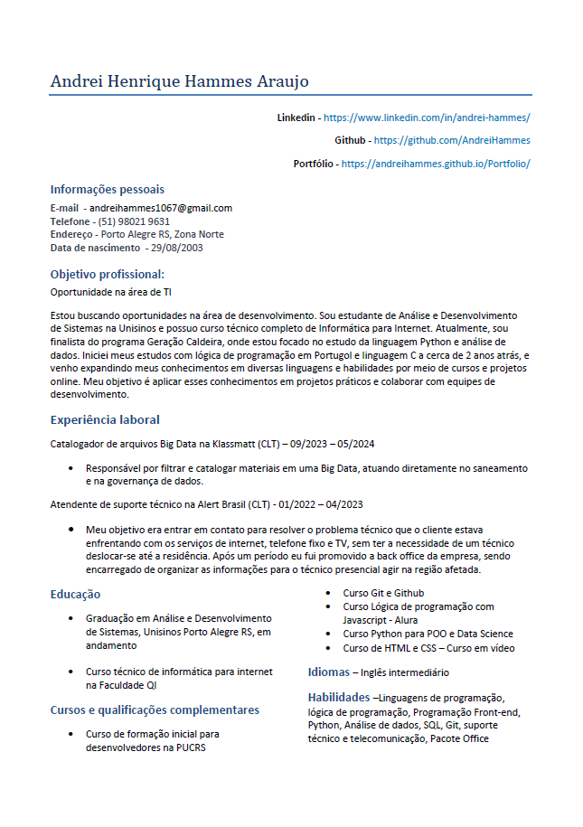

Olá, me chamo Andrei Hammes 👋
Desenvolvedor em formação 😁👨💻
Sou estudante de Análise e Desenvolvimento de Sistemas na Unisinos e possuo curso técnico completo de Informática para Internet. Em 2024, fui finalista do programa Geração Caldeira, onde foquei no estudo da linguagem Python e análise de dados. Iniciei meus estudos com lógica de programação em Portugol e linguagem C há cerca de 2 anos, e venho expandindo meus conhecimentos em diversas linguagens e habilidades por meio de cursos e projetos online. Atualmente, estou trabalhando com Inteligência Artificial na área de inovação, desenvolvendo projetos e soluções que integram tecnologia e criatividade. Meu objetivo é aplicar esses conhecimentos em projetos práticos e colaborar com equipes de desenvolvimento para impulsionar a inovação e a eficiência em soluções tecnológicas.
Confira minha jornada no geração caldeiraSkills ✍️
- Inteligência Artificial
- Python
- Análise de dados
- Lógica de programação
- SQL
- HTML
- CSS
- Javascript
- Versionamento de código com Git
- Inglês
Currículo 📃
Você pode baixar meu currículo clicando na miniatura abaixo 👀
Educação 🎓
- Graduando em análise e desenvolvimento de sistemas - Unisinos
- Curso técnico de informática para internet completo - QI Faculdade e escola técnica
Experiências 💼
- Estagiário de Inovação - Paim United Creators
Auxiliar no desenvolvimento e manutenção de pequenos projetos de inteligeência artificial, focando em soluções simples para automatizar e otimizar processos internos. Realização de consultas e análises de dados utilizando SQL, para suportar a tomada de decisão baseada em dados.
Participação em workshops e treinamentos sobre as últimas tendências em tecnologias de IA, análise de dados e ferramentas de BI, contribuindo para a cultura de inovação da empresa, sugerindo novas tecnologias ou abordagens que possam beneficiar a organização. Colaboração com equipes multidisciplinares para entender os requisitos do negócio e desenvolver soluções inovadoras
- Catalogador de idiomas - Klassmatt
Responsável por filtrar e catalogar materiais em uma Big Data, atuando diretamente no saneamento e na governança de dados.
- Suporte técnico e Back Office - Alert Brasil
Meu objetivo era entrar em contato para resolver o problema técnico que o cliente estava enfrentando com os serviços de internet, telefone fixo e TV, sem ter a necessidade de um técnico se deslocar até a residência. Após um período eu fui promovido a back office, sendo encarregado de organizar as informações para o téncnico presencial agir na região afetada.
Contato ✉️
Telefone: +55 (51) 98021-9631
Email: Me mande um email
LinkedIn: Visite meu LinkedIn
Github: Meu Github